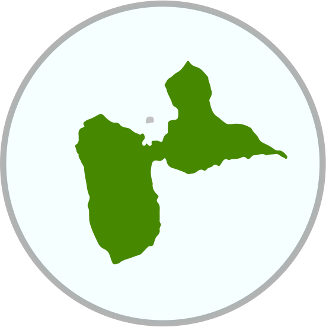
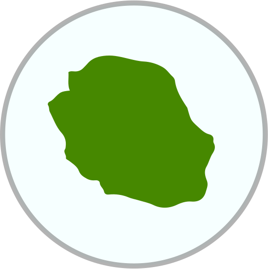
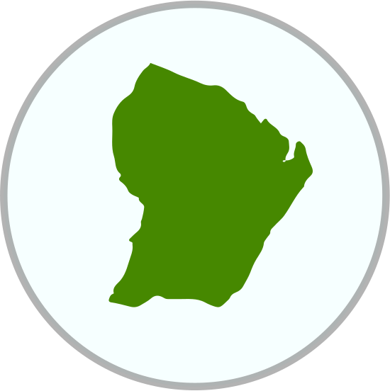
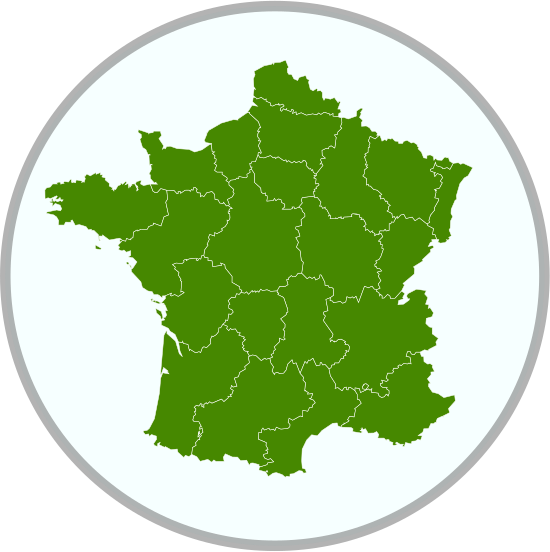

<header class="header header--utilisateurs">
  {% include navigation.html %}
  <!-- <div class="header__content">
   
  </div> -->
</header>

<section class="utilisateurs__section">
	<div id= 'map'>  <!-- La carte est ici --> </div>

	<nav id="menu-ui" class='menu-ui'>
		  <button class="pure-button-filter-animate active" id="filterall" href="#">
			Todos nuestros usuarios
		  </button>
		  <button class="pure-button" id="filter1">
			Parques nacionales
		  </button>
		  <button class="pure-button" id="filter2">
		  Parques  naturales  regionales
		  </button>
		  <button class="pure-button" id="filter3">
			Consejos departamentales
		  </button>
		  <button class="pure-button" id="filter4">
			Otros organismos
		  </button>
	</nav>


  <!-- emplacement des geosignets -->
  <div class='pure-button-group' id="group-fly">

  <figure id="fly1">
    
    <figcaption id="fig1">Guadalupe</figcaption>
  </figure>
    <figure id="fly2">
    
    <figcaption id="fig2">Reunión</figcaption>
  </figure>
    <figure id="fly3">
    
    <figcaption id="fig3">Guayana Francesa</figcaption>
  </figure>
    <figure id="fly4">
    
    <figcaption id="fig4">Metrópoli</figcaption>
  </figure>

  </div>

</section>

<!-- Intégration javascript -->
	<script type="text/javascript" language="javascript" src="{{ site.baseurl }}/assets/js/leaflet/jquery-3.3.1.min.js"></script> 	<!-- jquery -->
	<script type="text/javascript" language="javascript" src="{{ site.baseurl }}/assets/js/leaflet/leaflet.js"></script> 	<!-- leaflet  -->
	<script type="text/javascript" language="javascript" src="{{ site.baseurl }}/assets/js/leaflet/leaflet.geoJsonFilter-develop/L.geojsonfilter.js"></script>
	<script type="text/javascript" language="javascript" src="{{ site.baseurl }}/assets/js/leaflet/L.Control.Basemaps-min.js"></script> 	<!-- Plugin de gestion des fonds de carte -->
	<script type="text/javascript" language="javascript" src="{{ site.baseurl }}/assets/js/leaflet/Leaflet.Base64Legend-master/L.Control.Base64Legend-min.js"></script> <!-- Plugin de création de légende -->
	<script src='https://api.mapbox.com/mapbox.js/plugins/leaflet-fullscreen/v1.0.1/Leaflet.fullscreen.min.js'></script>
	<script type="text/javascript" language="javascript" src="{{ site.baseurl }}/assets/js/leaflet/carte.js"></script> 	<!-- Carte -->